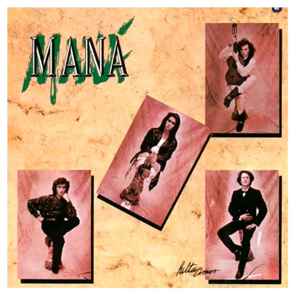
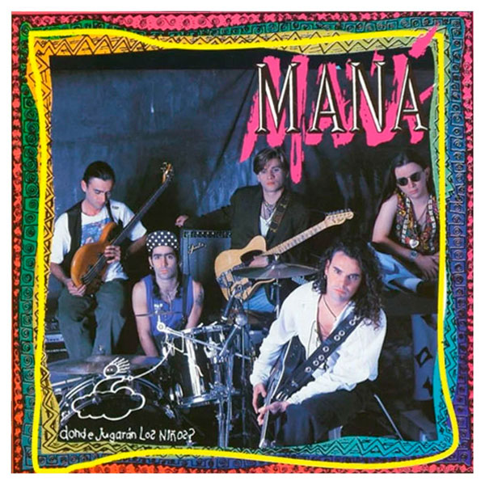
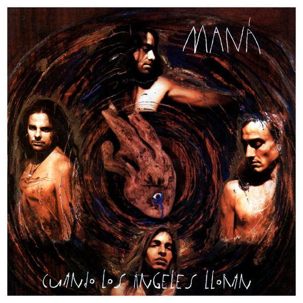
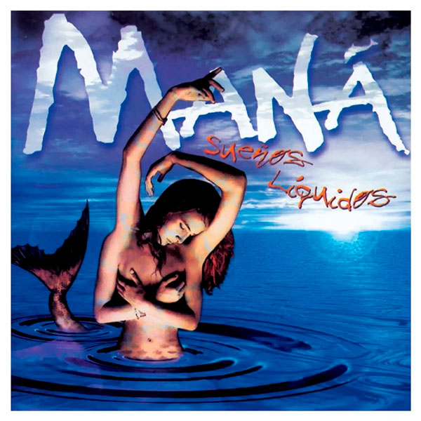
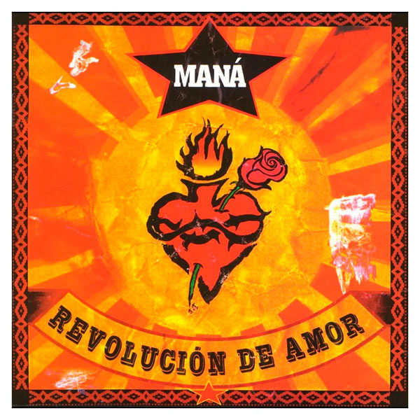

Discografía
Álbumes de Estudio
-

Falta Amor (1990)
Primer CD de estudio de Maná con el que iniciaron su proyección internacional.
- Incluye: Rayando el Sol, Buscándola
- Sello: WEA Latina
- Gitana
- Refrigerador
- Rayando el Sol
- Buscándola
- Soledad
- Falta Amor
- Estoy agotado
- Perdido en un Barco
- La puerta Azul
- Maeo
- No me mires así
-

¿Dónde Jugarán los Niños? (1992)
Álbum icónico y uno de los más vendidos del rock latino.
- Incluye: Oye Mi Amor, Vivir Sin Aire
- Sello: WEA Latina
- De pies a Cabeza
- Oye Mi Amor
- Cachito
- Vivir Sin Aire
- ¿Dónde Jugarán los Niños?
- El Desierto
- La Chula
- Como Te Deseo
- Te Llore Un Rio
- Como Diablos
- Huele A Tristeza
- Me Vale
-

Cuando los Ángeles Lloran (1995)
Trabajo con fuerte impronta social y ambiental.
- Incluye: Déjame Entrar, Hundido en un Rincón
- Sello: WEA Latina
- Como Un Perro Enloquecido
- Selva Negra
- Hundido en un Rincón
- El Reloj Cucu
- Mis Ojos
- Ana
- Siembra el Amor
- Cuando Los Ángeles Lloran
- Déjame Entrar
- No Ha Parado De Llover
- Anifaz
- El Borracho
-

Sueños Líquidos (1997)
Ganador del Grammy; consolidó su éxito en América y Europa.
- Incluye: En el Muelle de San Blas, Clavado en un Bar
- Sello: WEA Latina
- Hechicera
- Un Lobo Por Tu Amor
- Como Dueles En Los Labios
- Chaman
- Tu Tienes Lo Que Quiero
- Clavado en un Bar
- Robame El Alma
- En El Muelle De San Blas
- La Sirena
- Me Voy A Convertir En Un Ave
- Como te Extraño Corazon
- Amame Hasta Que Me Muera
-

Revolución de Amor (2002)
Sonido más rockero con colaboraciones destacadas.
- Incluye: Mariposa Traicionera, Eres Mi Religión
- Sello: WEA Latina
- Justicia, Tierra y Libertad
- Hay, Doctor
- Fe
- Sabanas Frias
- Pobre Juan
- ¿Por Que Te Vas?
- Mariposa Traicionera
- Sin Tu Cariño
- Eres Mi Religión
- No Voy a Ser Tu Esclavo
- Angel De Amor
- Nada Que Perder
-
Drama y Luz (2011)
Regreso con un sonido maduro y premiado en Latin GRAMMYs.
- Incluye: Lluvia al Corazón, El Verdadero Amor Perdona
- Sello: Warner Music Latina
- Lluvia Al Corazón
- Amor Clandestino
- Mi Reina Del Dolor
- El Espejo
- Sor Maria
- Vuela Libre Paloma
- No Te Rindas
- Latinoamérica
- El Dragón
- El Verdadero Amor Perdona
- Envenename